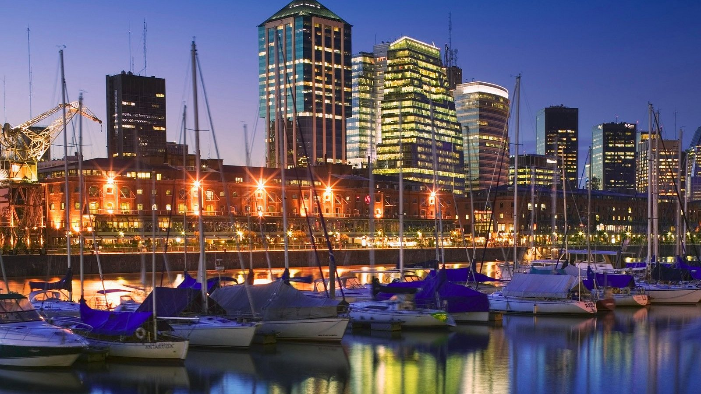
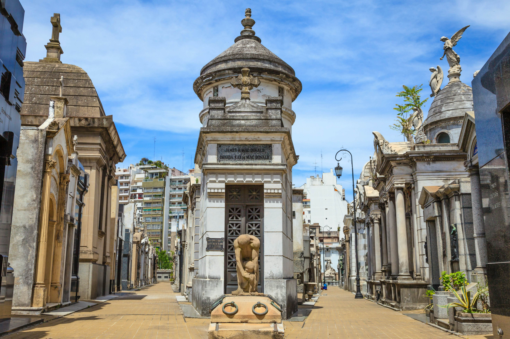

Explore Popular Experiences
IGUAZU FALLS

The colossal power of these thundering falls, viewable from both Argentina and Brazil, and accessible from Paraguay, is a mesmerizing sigh in a U-shaped formation.
JARDIN JAPONES

Traditional Japanese garden in Bosques de Palermo with serene walking paths, koi ponds, and manicured vegetation. Ideal for tranquil and strolls and cultural appreciation.
PUERTO MADERO
By day, this riverfront area is a booming business and shopping district and by night, a hip neighborhood with restaurants and fashionable clubs.
PERITO MORENO GLACIER

Glacial landscapes accessible by scenic trails and biat tours, featuring calving events and mini-trekking with stunning viewpoints for photography enthusiasts
SALITAS GRANDES

Salt flats in NW Argentina present otherwordly landscapes and photo opportunities under a deep blue sky.
TEATRO COLON

Historic theater with opulent architecture and a focus on operatic and musical history, featuring informative guided tours its ornate halls and concrete auditorium
RECOLETA
Recoleta neighborhood blends lively ambience and with serene parks, rich French architecture, and a renowned cemetery amid diverse dining and cultural attactions.
CATENA ZAPATA

Modern winery and restaurants with panoramic Andean views, wine and music tours, and a muti-sensory tasting journey. Includes a historical family-owned distillery and castle-like architecture
CANAL BEAGLE

Remote landscapes and diverse wildlife on scenic boat tours through the Beagle Channel, with close-up encounters of penguins and sea lions